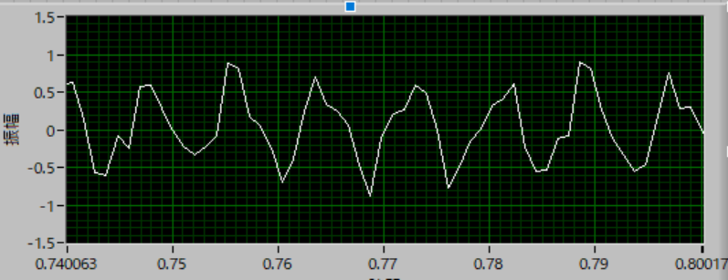
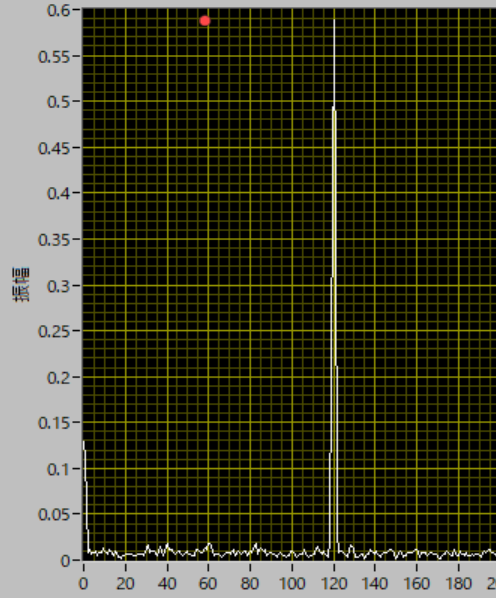
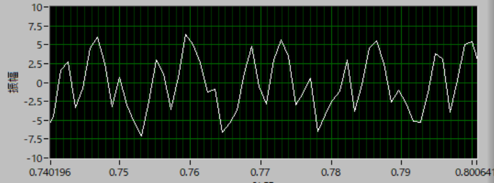
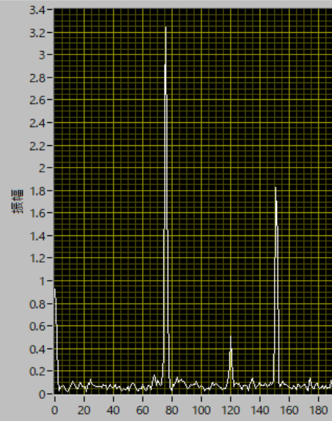

電動歯ブラシの振動数のチェック-01
歯ブラシ付き
電動歯ブラシの振動数のチェックを行ってみました．
電動歯ブラシを使い続けて，約30年，いままで振動数など気にもしていませんでしたが，今まで使っていた機種の電池が寿命を迎え，新しい機種を見当している際に，その性能を評価する上での振動数に着目しました．
元々，研究でも高速度カメラを使っていることもあり，高速度撮影には興味があります．
今までにも，スリンキー，ミルククラウンなどいろいろ試してきました．
機種：
ドルツ EW-DL34
2019年1月購入
ブラウン オーラルB プラックコントロール
2021年1月購入
撮影：
ソニー RX100V (960fps）
960fpsが正確かどうかは，時計（ストップウォッチ）を撮影して確認済です．
まずは，動画から
このように，
ドルツ：上下振動
ブラウン：回転（約40度）
と方式が異なり，各企業のポリシーが異なることが分かりますね．
どちらが効果的か私には分かりませんが，
ドルツ：従来の歯磨きのような磨き方
ブラウン：歯の表面を磨き上げるような磨き方
の違いがあるような気がします．
また，機構的に考えると，
ドルツ：往復運動がそのまま歯ブラシの運動となる
ブラウン：モーターの回転方向の振幅を90度変換し，ブラシを回転（約40度）させている
違いあり，このことからもドルツの替えブラシが比較的安価で，ブラウンのものが比較的高価なことが分かります．
振動数
さて，実際の振動数ですが，結果をまとめると，
・ドルツ（毎分約31,000ブラシストローク）
振動数：120 Hz （毎分7,200回）
振幅(Pk-Pk) ： 約0.68 mm
・ブラウン （毎分約48,800回）
振動数：76 Hz （毎分4,500回）
回転角：約40度
となりました． 公称とは大分違う結果に．．．
ドルツは購入して2年もたつので，そのせいか？？ ブラウンは，そもそも毎分約48,800回が誤植なのか
波形
実際の波形を解析する上で結構苦労しました，というのもmp4形式で保存されていたのですが，そのままでは，ImageJで読み込んでくれず，プラグインもうまく動きませんでした．
そこで，
Adobe Premiererでmp4ファイルを読み込む
連続Tiffで保存
連続TiffをImageJで読み込み
可動部分をクロップ，グレースケール
対象部分の平均値の変化を解析（3,000フレーム，マクロで自動化）
Resultをcsvで保存
エクセルで読み込み，平均値のみを抽出，テキストで保存
Labviewで作ったプログラムで解析
という面倒な手順で作成しました．
実際の波形は，
・ドルツ
実波形

スペクトル

・ブラウン
実波形

スペクトル

となっています．
プラウンのスペクトルに150Hzあたりのピークがあるのは，波形自体がそれほど美しくないので，倍波が出たのではと思います．